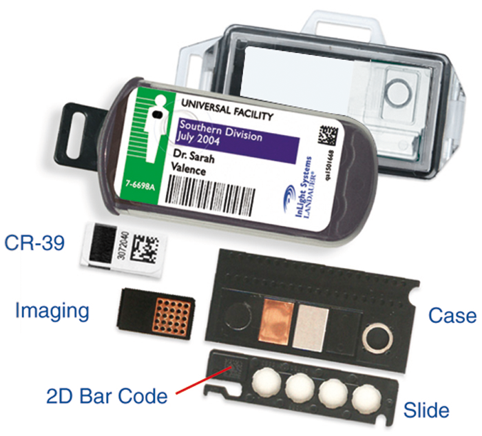

Dosimetría
osl personal

DESCRIPCIÓN:
Servicio de DOSIMETRÍA PERSONAL OSL Optically Stimulated Luminescence “Luminiscencia por Estimulación Óptica”.
Es un método de vanguardia tecnológica a nivel mundial, diseñado por LANDAUER®.
ARSA® y LANDAUER® consolidan una sociedad comercial en una nueva empresa denominada ALSA DOSIMETRÍA, S. DE R.L. que ofrece el servicio de dosimetría con mayor precisión y versatilidad que su similar en dosimetría termoluminiscente.
Servicio con supervisión y evaluación periódica por parte de la Comisión Nacional de Seguridad Nacional y Salvaguardias.
APLICACIONES:
• Dosimetría personal.
• Dosimetría ambiental.
• Dosimetría clínica.
CARACTERÍSTICAS:
• Trióxido de aluminio.
• Incide energía.
• Excita electrones en red cristalina.
• Se atrapan en nivel de energía diferente.
• Tratamiento: luz en región verde.
• Brinco energético y emisión de luz proporcional a energía incidente.
• Interpretación de dosis.
Versatilidad, servicio que ofrece dosimetría de:
• Rayos Beta.
• Rayos Gamma.
• Rayos X.
• Neutrones.
Servicio, actualmente damos servicio a más de:
• 12,000 usuarios.
• 24,000 dosímetros en circulación en todo el territorio nacional.
DATOS COMPLEMENTARIOS: Para mayor información comunicarse a:
Tel./Fax: (55) 5538-8690
Lada sin costo: 01 800-045-2772
e-mail: ventas@arsamx.com
www.arsamx.com